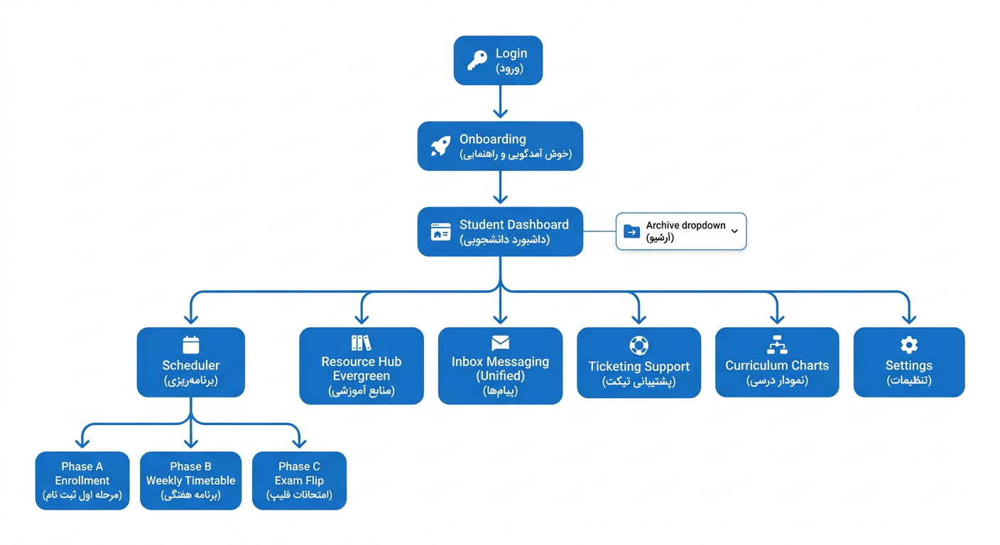
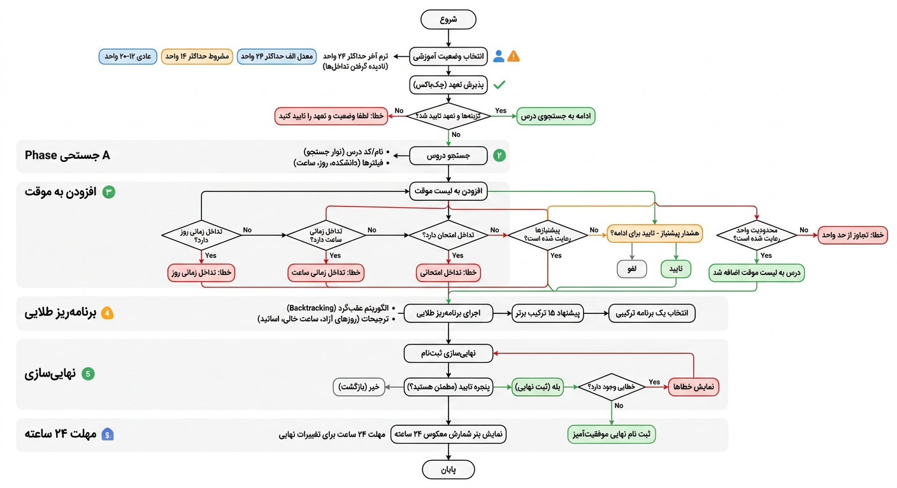
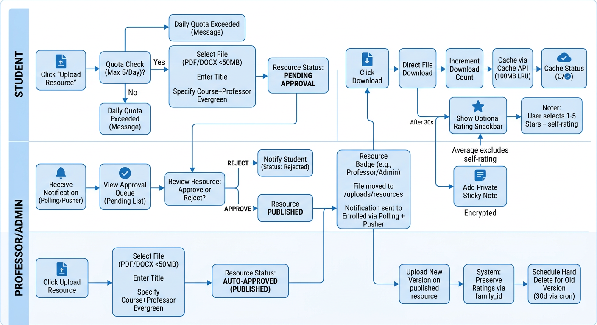
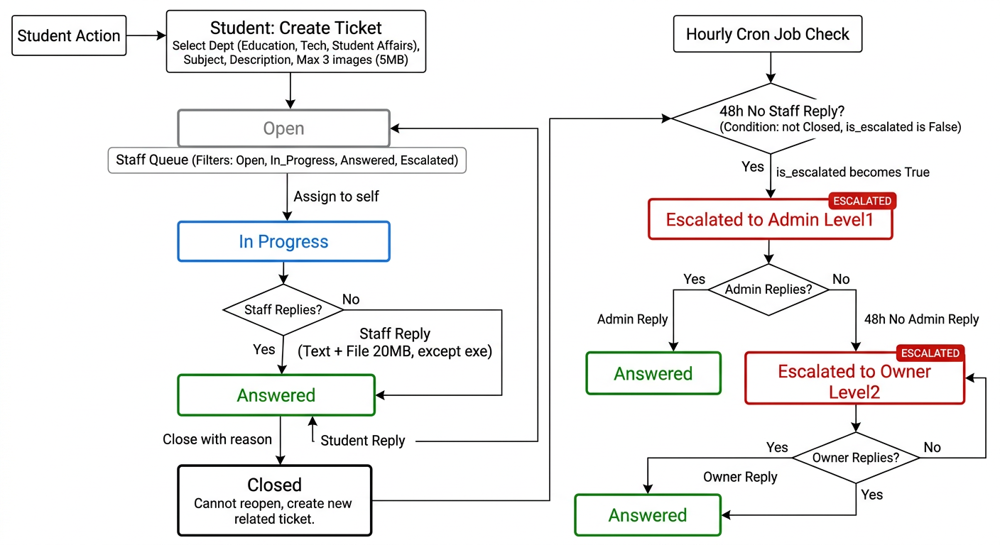
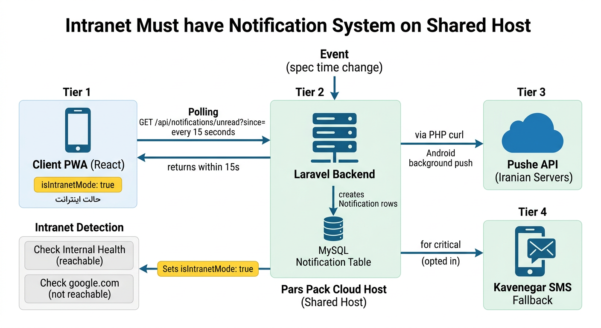

Pars Pack Cloud Host + Host Iran | React PWA + Laravel + MySQL | 600 CS Students | No VPS, No iOS | Polling 15s + Pushe
Login → Onboarding (forced first name + password change) → Student Dashboard with Archive dropdown (current + past semesters). 6 main modules: Scheduler (Phase A Enrollment, Phase B Weekly Timetable, Phase C Exam Flip), Resource Hub Evergreen (course+professor), Inbox Unified, Ticketing, Curriculum Charts, Settings. Bottom nav: Dashboard, Scheduler, Resources, Inbox (unread badge), More. Top: Semester badge, Global state, Polling status Intranet/Online/Offline, Bell, Profile.

Student must first declare academic status via Honor System radio (Normal 12-20, Conditional max14, GPA_A max24, Final Semester max24 + ignore time/exam conflicts) + acknowledge checkbox "مسئولیت با من است". Then Search (Name/Code, filters dept/day/time), Add to Temporary List with validations: time overlap checks day_of_week + time, exam overlap same day 2h buffer, prereq warning modal (not block), credit limit per status. Golden Scheduler button: backtracking with MRV heuristic, timeout 5s, max 1000 combos, scoring freeDays*20 -gap*10 +profBonus*15, returns top 15. Final Submit with confirmation, triggers grace period 24h countdown via cron. Offline: add/remove temp queued IndexedDB, final requires online.

Evergreen = (course_id + professor_id) not semester. Student upload PDF/DOCX max 50MB, 5/day quota via MySQL, pending approval. Professor auto-approved badge professor, Student pending. Approval queue Expert/Admin sees pending list, Approve -> moves file from temp to permanent /uploads/resources/{course}/{prof}/{uuid}.pdf on Cloud Host (10GB Shop limit). Download increments count, caches via Cache API 100MB LRU. Rating optional snackbar after 30s (not forced popup), average excludes self to prevent inflation. Sticky private encrypted via Crypt::encryptString. Versioning family_id preserves ratings, old scheduled hard delete 30d via cron daily.

Student creates ticket: dept education/technical/student_affairs, subject, description, max 3 images 5MB. Status: Open (gray) -> In Progress (blue, Expert assigns to self) -> Answered (green, Expert replies) -> Closed (black, Expert/Admin closes). Student reply when Answered reverts to Open. Closed cannot reopen, must create new related ticket button prefilled [مرتبط با #ID]. Escalation: Cron hourly checks no staff reply 48h -> is_escalated=true -> Escalated to Admin Level1 -> If Admin no reply 48h -> Owner Level2. Notification via polling + Pushe PHP curl.

Your must-have: Must work when international internet cut. V9 Shared Host has no WebSocket server (cPanel can't run persistent). So: Tier 1 Polling: Frontend polls GET /api/notifications/unread?since= every 15s foreground, 60s background via setInterval + Workbox Background Sync. HTTP works on SHOMA, so intranet still works. Tier 2 Android Pushe: Server calls Pushe API via PHP curl https://api.pushe.co/v2/ - Pushe has Iranian servers reachable via intranet, unlike FCM which needs google.com. Tier 3 SMS Fallback: Kavenegar API via PHP curl for critical events if user opted-in. Intranet Detection: Client checks internal /health reachable but external google.com not -> isIntranetMode=true yellow badge "حالت اینترانت - بروزرسانی هر ۱۵ ثانیه". iOS removed entirely per your request.

Cloud Host Shop 10GB SSD / 5 vCPU / 7GB RAM / Unlimited Bandwidth = 716,550 Toman/month - Recommended for 600. Contains: Laravel backend outside public_html, MySQL unlimited DB, local /uploads/resources 10GB, cron every minute `php artisan schedule:run`, SSL Let's Encrypt, LiteSpeed. Frontend React PWA static dist/ goes to public_html. Optional second Host Iran for frontend static low ping + half-price traffic. Android APK hosted at /app.apk direct download, no Google Play needed (sanctioned). All 20 features work: 0 business features lost vs VPS, only degraded: real-time 0s -> 15s polling, concurrency 2000 -> 200-300, disk 2TB -> 10GB.